Hi folks, this is my personal academic page
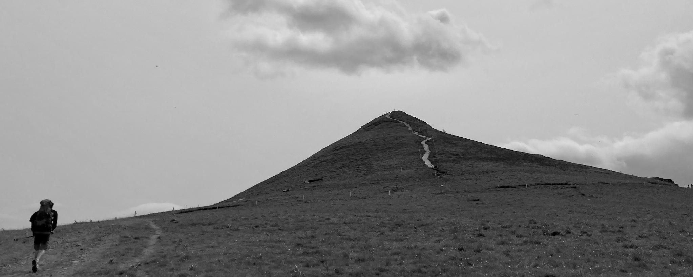
I earned my PhD in remote sensing from L’Université Grenoble-Alpes, following my tenure at GIPSA-lab in Grenoble, France. Subsequently, I served as a postdoctoral researcher at the Environmental Remote Sensing Laboratory of the École Polytechnique Fédérale de Lausanne (EPFL) in Switzerland, and collaborated with the Radar, Satellites, and Nowcasting group at MeteoSwiss in Locarno, Switzerland. My academic journey also includes positions at the Centre for Radar Meteorology (Météo-France) in Toulouse, France, and at AgroParisTech in Nancy, France, prior to my current role at the French National Mapping Agency (IGN).
I am a specialist in environmental remote sensing and spatial modeling. Methodologically, my work focuses on the optimal fusion of data from various remote sensing sensors, the modeling of relationships between spatial data and environmental variables using statistical and artificial intelligence (AI) methods, and the quantification of uncertainties associated with spatial estimates and predictions. Thematically, after working on the cryosphere and the atmosphere, I now focus on forest ecosystems. Given their crucial role in carbon sequestration, climate change adaptation, and the provision of other ecosystem services, I am particularly interested in their long-term spatio-temporal monitoring - which is essential for better understanding and enhancing these dynamics.
Here are a few of the research questions that have shaped my work
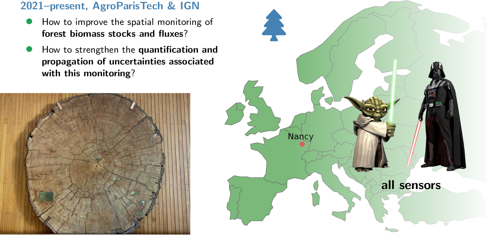
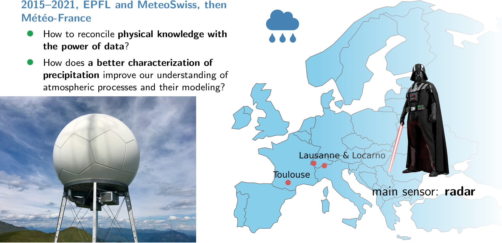
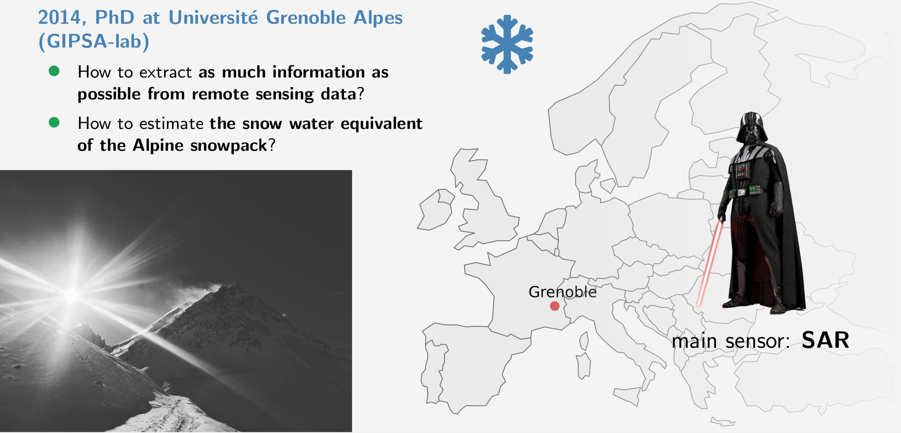
Here are the most important publications I have worked on
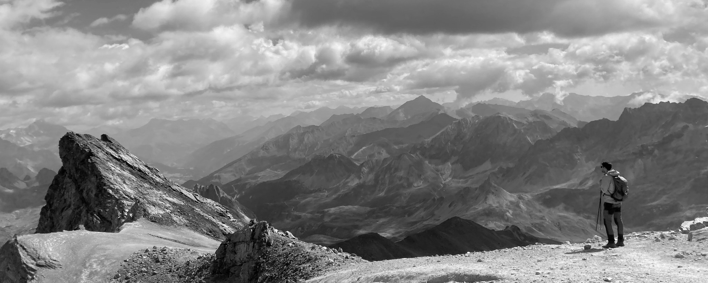
- [PREPRINT] Y. Su, Y. Xu, X. Zhang, D. Makowski, A. Pellissier-Tanon, S. Francini, T. Shi, K. Yu, S. Liu, H. Chen, H. Li, J. Chang, S. Chen,
C. Yin, N. Besic, M. Brandt, A. Viana-Soto, K. Kowalski, C. Senf, A. d’Aspremont, and P. Ciais,
“Forest disturbances intensify land surface warming across europe,” Research Square (undergoing review at Nature Geoscience), 2026. DOI: 10.21203/rs.3.rs-8782712/v1.
Open access (pdf DOI link) - [PREPRINT] M. Schwartz, F. Fogel, N. Besic, D. Robert, L. Geist, J.-P. Renaud, J.-M. Monnet, C. Mosig, C. Vega, A. d’Aspremont,
L. Landrieu, and P. Ciais, “Formspot: A decade of tree-level, country-scale forest monitoring,” arXiv, 2025. DOI: 10.48550/arXiv.2512.17021.
Open access (pdf DOI link) - [PREPRINT] Y. Su, N. Besic, X. Zhang, Y. Xu, S. Francini, G. D'Amico, G. Chirici, M. Schwartz, I. Fayad, S. Brood,
A. Pellissier-Tanon, K. Yu, H. Chen, S. Chen, A. d'Aspremont, and P. Ciais,
“A fused canopy height map of Italy (2004–2024) from spaceborne and airborne LiDAR, and Landsat via deep learning and Bayesian averaging,” Earth Syst. Sci. Data Discuss., 2025.
DOI: 10.5194/essd-2025-378. (undergoing review)
Open access (pdf DOI link) - H. E. Cuny, J.-D. Bontemps, N. Besic, A. Colin, L. Hertzog, A. Le Squin, W. Marchand, C. Vega, and J.-M. Leban,
“Wood density variation in European forest species: drivers and implications for multiscale biomass and carbon assessment in France,” Biogeosciences, 23, 2365–2388, 2026.
DOI: 10.5194/bg-23-2365-2026.
Open access (pdf DOI link) - N. Picard, N. Besic, M. Meliho, F. Mortier, J. Sainte-Marie, and M. Legay,
“Bayesian model averaging of climate-dependent forest models using Expectation-Maximization,”
Ecological modelling, Volume 510, 2025. DOI: 10.1016/j.ecolmodel.2025.111355.
Still under embargo, but the preprint PDF is available on request, so just drop me a message! - M. Schwartz, P. Ciais, E. Sean, A. de Truchis, C. Vega, N. Besic, I. Fayad, J.-P. Wigneron, S. Brood, A. Pelissier-Tanona, J. Pauls, G. Belouze, and Y. Xu,
“Retrieving yearly forest growth from satellite data: A deep learning based approach,”
Remote Sensing of Environment, Volume 330, 2025. DOI: 10.1016/j.rse.2025.114959.
Open access (pdf DOI link) - P. Ciais, C. Zhou, P. Schneider, M. Schwartz, N. Besic, C. Vega, and J. Bontemps, “An outlook on the rapid decline
of carbon sequestration in french forests and associated reporting needs,” Comptes Rendus. Géoscience, vol. 358, pp. 27–49, 2025.
DOI: 10.5802/crgeos.309.
Open access (pdf DOI link) - L.-A. Ramirez Parra, J.-P. Renaud, R. Bindner, T. Cordonnier, L. Hertzog, N. Besic, J.-D. Bontemps, and C. Vega,
“Fiabilité des modèles de télédétection établis sur de grands territoires forestiers : une analyse de leur applicabilité à l’échelle locale,”
Revue Forestière Française, 76, 2, 173-185 2025. DOI: 10.20870/revforfr.2025.9611. (in French)
Open access (pdf DOI link) - G. Destouet, N. Besic, E. Joetzjer, and M. Cuntz,
“Turbulent transport extraction in time and frequency and the estimation of eddy fluxes at high resolution,” Atmospheric Measurement Techniques,
18, 3193–3215, 2025. DOI: 10.5194/amt-18-3193-2025.
Open access (pdf DOI link) -
N. Besic, N. Picard, C. Vega, J.-D. Bontemps, L. Hertzog, J.-P. Renaud, F. Fogel, M. Schwartz, A. Pellissier-Tanon, G. Destouet, F. Mortier, M. Planells-Rodriguez, and P. Ciais, “Remote sensing-based forest canopy height mapping: some models are useful, but might they provide us with even more insights when combined?,” Geoscientific Model Development, 18, 337–359, 2025. DOI: 10.5194/gmd-18-337-2025.
Open access (pdf DOI link)This paper highlights the importance of ensemble modelling when combining diverse remote sensing approaches for carbon mapping. It also underscores the key role of understanding and analysing uncertainties in spatial predictions, which lies at the core of my research.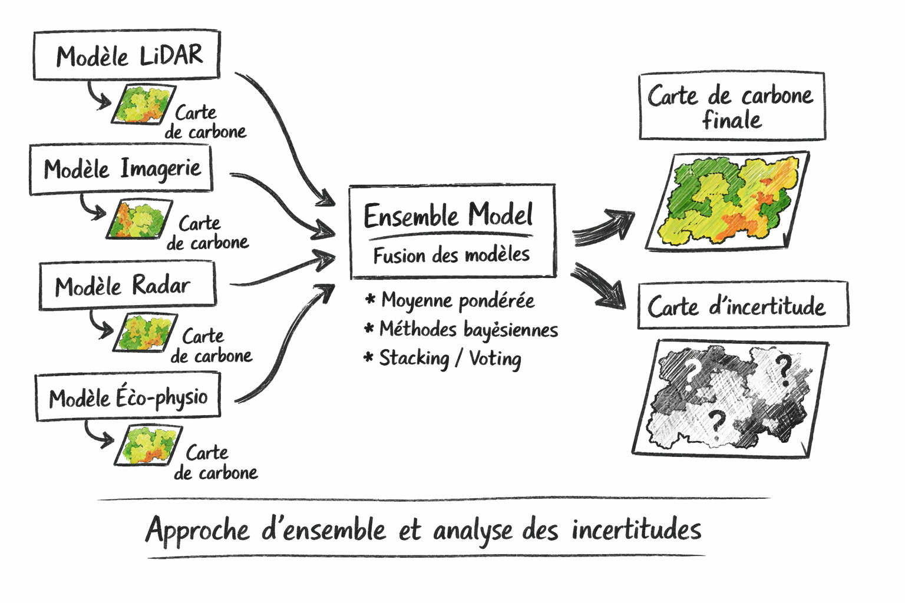
- Y. Su, M. Schwartz, I. Fayad, M. Garcia, M. Zavala, J. Tijerin-Trivino, J. Astigarraga, V. Cruz-Alonso, S. Liu, X. Zhang,
S. Chen, F. Ritter, N. Besic, A. d’Aspremont, and P. Ciais, “Canopy height and biomass distribution across the forests
of Iberian peninsula,” Nature Research - Scientific Data, 12, 678, 2025. DOI: 10.1038/s41597-025-05021-9.
Open access (pdf DOI link) - F. Fogel, Y. Perron, N. Besic, L. Saint-André, A. Pellissier-Tanon, M. Schwartz, T. Boudras,
I. Fayad, A. d'Aspremont, L. Landrieu, and P. Ciais, “Open-Canopy: Towards Very High Resolution Forest Monitoring,”
IEEE/CVF Proceedings of the Computer Vision and Pattern Recognition Conference (CVPR), pp. 1395-1406, 2025. DOI: 10.1109/CVPR52734.2025.00138.
Open access (pdf CVF link) -
N. Besic, S. Durrieu, A. Schleich, and C. Vega, “Using structural class pairing to address the spatial mismatch between GEDI measurements and NFI plots,” IEEE Journal of Selected Topics in Applied Earth Observations and Remote Sensing, vol. 17, pp. 12 854–12 867, 2024. DOI: 10.1109/JSTARS.2024.3425431.
Open access (pdf DOI link)This paper is highlighted because it shows the limitations of conventional approaches based on simple allometric relationships between canopy height and biomass or carbon, still widely used in vegetation remote sensing. By demonstrating the value of richer structural information from lidar profiles, including lower canopy layers, it paves the way for a more robust characterization of aboveground carbon. It also provides the methodological basis for a PhD project I supervise, aimed at refining and extending this approach toward more accurate and generalizable estimates of forest carbon stocks.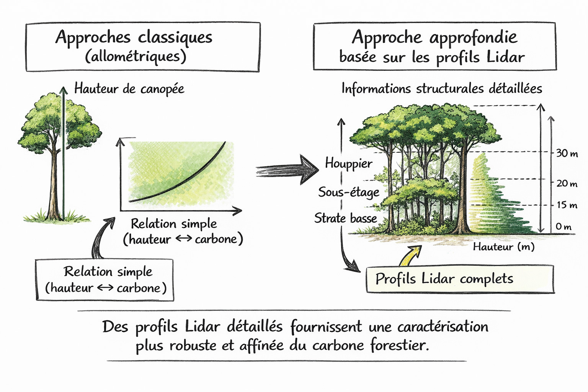
-
N. Besic, N. Picard, J. Sainte-Marie, M. Meliho, C. Piedallu, and M. Legay, “A novel framework and a new score for the comparative analysis of forest models accounting for the impact of climate change,” Journal of Agricultural, Biological and Environmental Statistics, vol. 29, no. 1, pp. 73–91, 2023. DOI: 10.1007/s13253-023-00557-y.
Postprint available (pdf)This paper is highlighted because it illustrates, through forest models under climate change, one of the aspects of my research philosophy: the complementarity between mechanistic approaches and observation-based statistical models. By comparing models in the space of environmental variables rather than only in geographic space, it reveals how this complementarity naturally emerges across scales.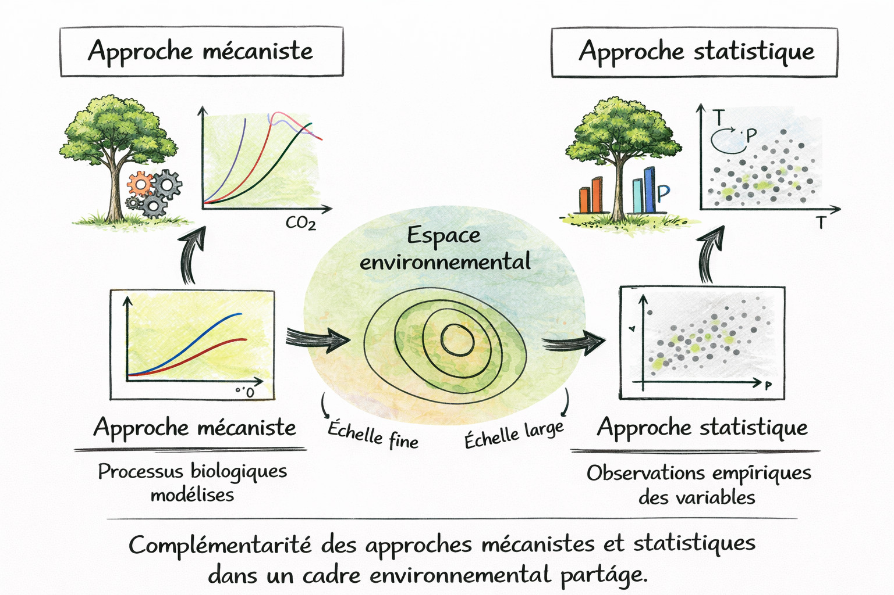
- J. Gehring, A. Ferrone, A.-C. Billault-Roux, N. Besic, K. D. Ahn, G. Lee, and A. Berne, “Radar and groundlevel
measurements of precipitation collected by the École Polytechnique Fédérale de Lausanne during the
International Collaborative Experiments for Pyeongchang 2018 Olympic and Paralympic winter games,” Earth
System Science Data, vol. 13, no. 2, pp. 417–433, 2021. DOI: 10.5194/essd-13-417-2021.
Open access (pdf DOI link) - J. Gehring, A. Oertel, É. Vignon, N. Jullien, N. Besic, and A. Berne, “Microphysics and dynamics of snowfall
associated with a warm conveyor belt over Korea,” Atmospheric Chemistry and Physics, vol. 20, no. 12, pp. 7373–7392, 2020.
DOI: 10.5194/acp-20-7373-2020.
Open access (pdf DOI link) - A. Sunjerga, M. Rubinstein, N. Pineda, A. Mostajabi, M. Azadifar, D. Romero, O. Van der Velde, J. Montanya,
J. Figueras i Ventura, N. Besic, J. Grazioli, A. Hering, U. Germann, G. Diendorfer, and F. Rachidi, “LMA
observations of upward lightning flashes at the Säntis tower initiated by nearby lightning activity,” Electric
Power Systems Research, vol. 181, p. 106 067, 2020, issn: 0378-7796. DOI: 10.1016/j.epsr.2019.106067.
Open access (pdf DOI link) - J. Figueras i Ventura, N. Pineda, N. Besic, J. Grazioli, A. Hering, O. A. van der Velde, D. Romero, A. Sunjerga,
A. Mostajabi, M. Azadifar, M. Rubinstein, J. Montanyà, U. Germann, and F. Rachidi, “Analysis of the lightning
production of convective cells,” Atmospheric Measurement Techniques, vol. 12, no. 10, pp. 5573–5591, 2019.
DOI: 10.5194/amt-12-5573-2019.
Open access (pdf DOI link) - J. Figueras i Ventura, N. Pineda, N. Besic, J. Grazioli, A. Hering, O. A. van der Velde, D. Romero, A. Sunjerga, A.
Mostajabi, M. Azadifar, M. Rubinstein, J. Montanyà, U. Germann, and F. Rachidi, “Polarimetric radar characteristics
of lightning initiation and propagating channels,” Atmospheric Measurement Techniques, vol. 12,
no. 5, pp. 2881–2911, 2019. DOI: 10.5194/amt-12-2881-2019.
Open access (pdf DOI link) - N. Pineda, J. Figueras i Ventura, D. Romero, A. Mostajabi, M. Azadifar, A. Sunjerga, F. Rachidi, M. Rubinstein,
J. Montanyà, O. van der Velde, P. Altube, N. Besic, J. Grazioli, U. Germann, and E. R. Williams, “Meteorological
aspects of self-initiated upward lightning at the Säntis tower (Switzerland),” Journal of Geophysical Research:
Atmospheres, vol. 124, no. 24, pp. 14 162–14 183, 2019. DOI: 10.1029/2019JD030834.
Open access (pdf DOI link) - É. Vignon, N. Besic, N. Jullien, J. Gehring, and A. Berne, “Microphysics of snowfall over coastal East Antarctica
simulated by Polar WRF and observed by radar,” Journal of Geophysical Research: Atmospheres, vol. 124, no. 21,
pp. 11 452–11 476, 2019. DOI: 10.1029/2019JD031028.
Open access (pdf DOI link) -
N. Besic, J. Gehring, C. Praz, J. Figueras i Ventura, J. Grazioli, M. Gabella, U. Germann, and A. Berne, “Unraveling hydrometeor mixtures in polarimetric radar measurements,” Atmospheric Measurement Techniques, vol. 11, no. 8, pp. 4847–4866, 2018. DOI: 10.5194/amt-11-4847-2018.
Open access (pdf DOI link)This paper is highlighted because it captures an important aspect of my research approach: anchoring statistical methods in physical understanding. Based on radar signal physics and scattering mechanisms, it shows how statistical models can be developed in a way that remains consistent with the underlying physical processes.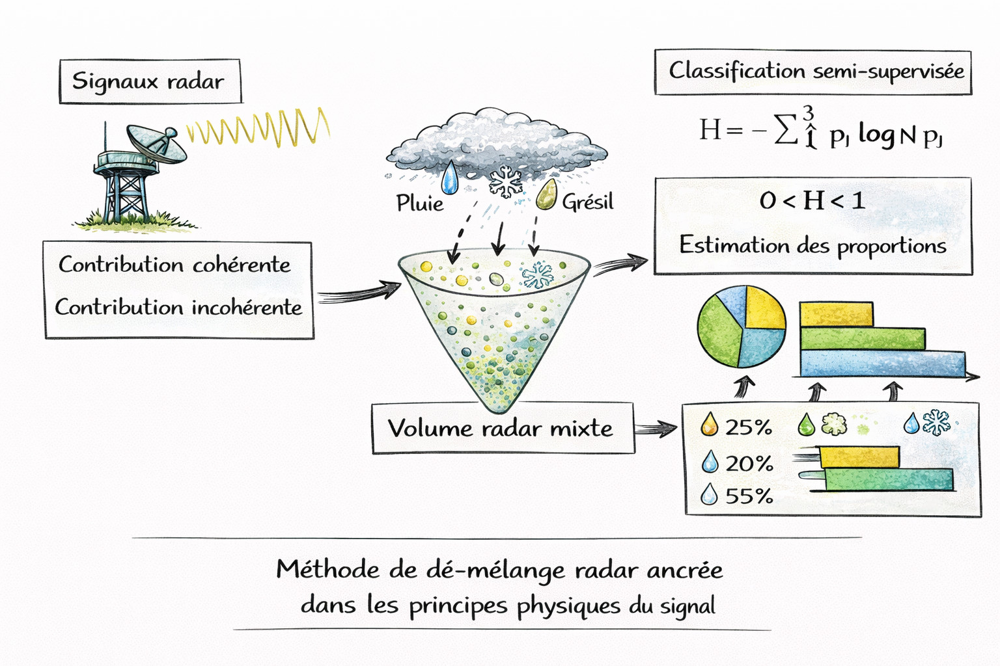
- F. Gerber, N. Besic, V. Sharma, R. Mott, M. Daniels, M. Gabella, A. Berne, U. Germann, and M. Lehning,
“Spatial variability in snowprecipitation and accumulation in COSMO–WRF simulations and radar estimations
over complex terrain,” The Cryosphere, vol. 12, no. 10, pp. 3137–3160, 2018. DOI: 10.5194/tc-12-3137-2018.
Open access (pdf DOI link) - S. Trefalt, A. Martynov, H. Barras, N. Besic, A. Hering, S. Lenggenhager, P. Noti, M. Röthlisberger, S. Schemm,
U. Germann, and O. Martius, “A severe hail storm in complex topography in Switzerland - observations and
processes,” Atmospheric Research, vol. 209, pp. 76–94, 2018, issn: 0169-8095. DOI: 10.1016/j.atmosres.2018.03.007.
Open access (pdf DOI link) - D. Nerini, N. Besic, I. Sideris, U. Germann, and L. Foresti, “A non-stationary stochastic ensemble generator
for radar rainfall fields based on the short-space Fourier transform,” Hydrology and Earth System Sciences,
vol. 21, no. 6, pp. 2777–2797, 2017. DOI: 10.5194/hess-21-2777-2017.
Open access (pdf DOI link) -
N. Besic, J. Figueras i Ventura, J. Grazioli, M. Gabella, U. Germann, and A. Berne, “Hydrometeor classification through statistical clustering of polarimetric radar measurements: a semi-supervised approach,” Atmospheric Measurement Techniques, vol. 9, no. 9, pp. 4425–4445, 2016. DOI: 10.5194/amt-9-4425-2016.
Open access (pdf DOI link)This paper is highlighted as a compelling example of combining learning-based approaches with physical knowledge to improve the performance of remote sensing models. It shows how integrating physical understanding with data-driven learning can lead to more robust explanations of key environmental variables.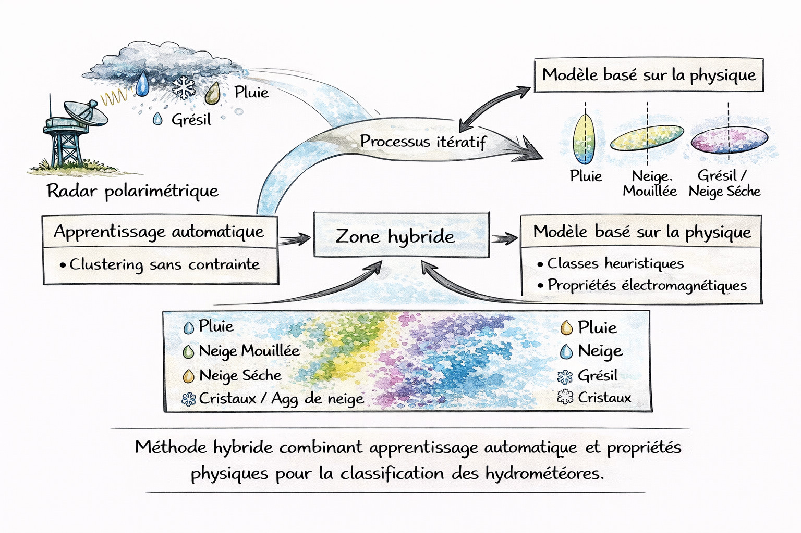
- L. Pralon, G. Vasile, M. DallaMura, J. Chanussot, and N. Besic, “Evaluation of ICA-based ICTD for PoLSAR data analysis using a sliding window approach: Convergence rate, Gaussian sources, and spatial correlation,” IEEE Transactions on Geoscience and Remote Sensing, vol. 54, no. 7, pp. 4262–4271, 2016. DOI: 10.1109/TGRS.2016.2538900.
-
N. Besic, G. Vasile, J. Chanussot, and S. Stankovic, “Polarimetric incoherent target decomposition by means of independent component analysis,” IEEE Transactions on Geoscience and Remote Sensing, vol. 53, no. 3, pp. 1236–1247, 2015. DOI: 10.1109/TGRS.2014.2336381.
Postprint available (pdf)This paper is highlighted because it reflects a key methodological principle: extracting physically interpretable information before any modelling step, and keeping signal processing at the core of the analysis. In contrast to black-box approaches, it emphasizes the importance of interpretability and physical consistency in the variables used. -
N. Besic, G. Vasile, J.-P. Dedieu, J. Chanussot, and S. Stankovic, “Stochastic approach in wet snow detection using multitemporal SAR data,” IEEE Geoscience and Remote Sensing Letters, vol. 12, no. 2, pp. 244–248, 2015. DOI: 10.1109/LGRS.2014.2334355.
Postprint available (pdf)This paper is highlighted because it exemplifies a probabilistic approach to remote sensing, explicitly accounting for uncertainties by combining radar signal physics and observational variability. By treating the signal as a stochastic process and producing probabilistic maps rather than deterministic classifications, it illustrates how uncertainty can be propagated throughout the entire estimation chain and extended to other environmental variables. - N. Besic, G. Vasile, A. Anghel, T.-I. Petrut, C. Ioana, S. Stankovic, A. Girard, and G. d’Urso, “Zernike ultrasonic
tomography for fluid velocity imaging based on pipeline intrusive time-of-flight measurements,” IEEE
Transactions on Ultrasonics, Ferroelectrics, and Frequency Control, vol. 61, no. 11, pp. 1846–1855, 2014. DOI:
10.1109/TUFFC.2014.006515.
Postprint available (pdf) - N. Besic, G. Vasile, F. Gottardi, J. Gailhard, A. Girard, and G. d’Urso, “Calibration of a distributed SWE model
using MODIS snow cover maps and in situ measurements,” Remote Sensing Letters, vol. 5, no. 3, pp. 230–239,
2014. DOI: 10.1080/2150704X.2014.897399.
Postprint available (pdf)
Please contact me if you think we could do some science together
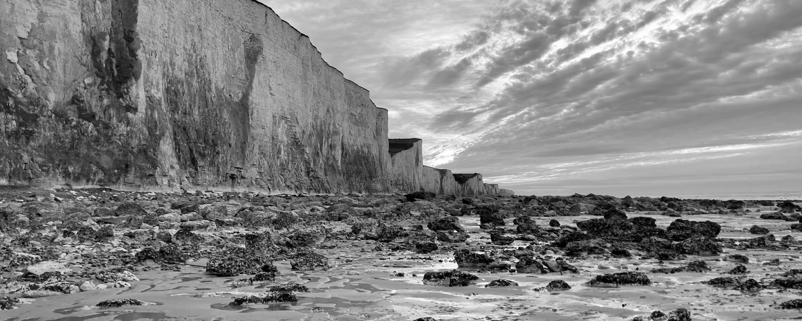
- nikola.besic [at] ign.fr
n.m.besic [at] gmail.com - LIF, Géodata Paris - IGN
14 Rue Girardet
54000 Nancy
France